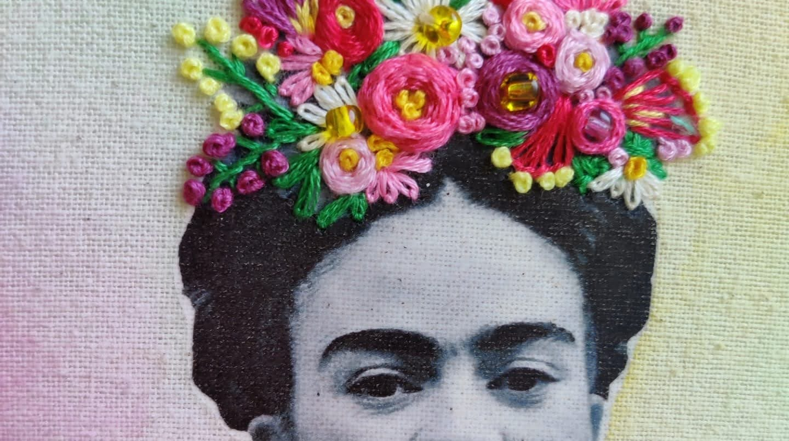
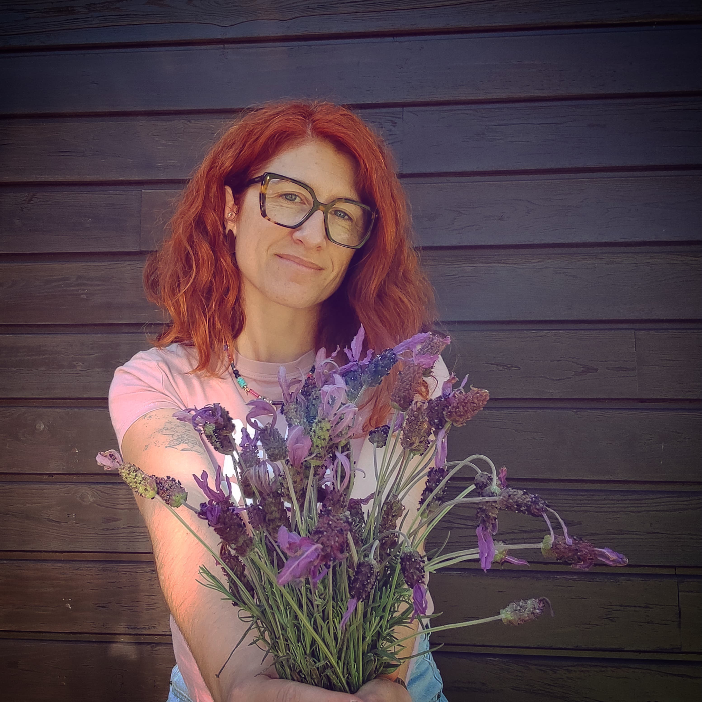
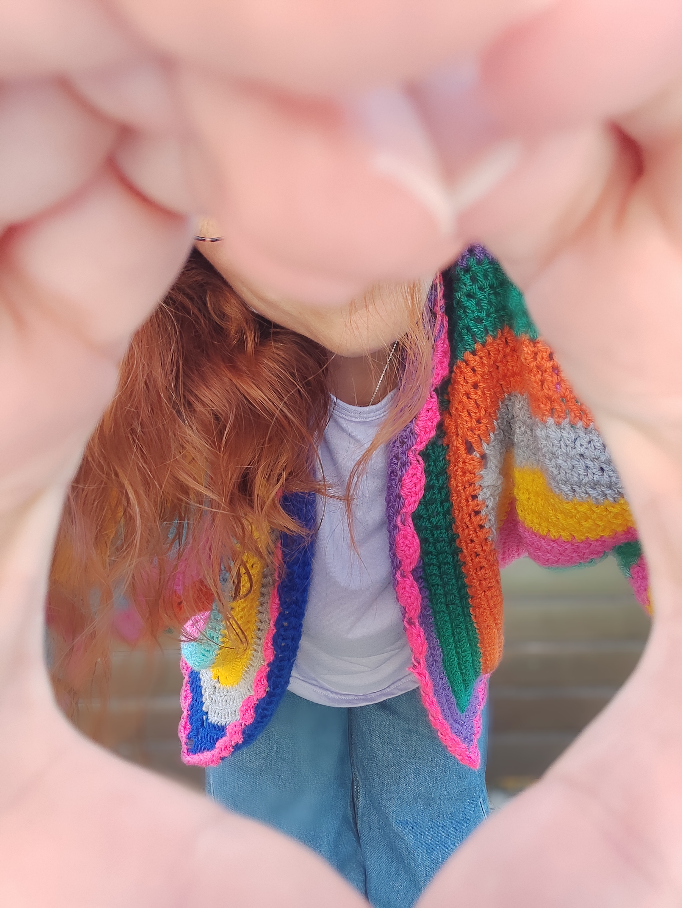
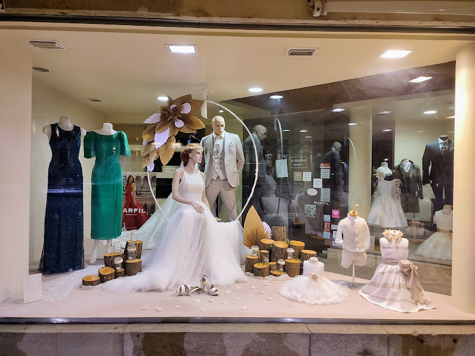

Bordado
Trabalhos artesanais desenvolvidos com dedicação, emoção e atenção ao detalhe.
Arte • Bordado • Crochê • Vitrinismo • Desenvolvimento Pessoal
A criatividade transformou-se no fio condutor da minha história, ligando emoções, memórias e experiências através da arte.
Conheça o meu percurso
Durante muitos anos senti que a vida decidia por mim. Entre responsabilidades, desafios e mudanças, fui aprendendo a redescobrir quem realmente sou.
A arte surgiu como um espaço de liberdade, expressão e reencontro pessoal. Através do bordado, do crochê, do vitrinismo e das atividades criativas, encontrei uma forma de transformar emoções em algo visível e cheio de significado.
Hoje continuo a construir esse caminho, partilhando experiências, conhecimentos e projetos que unem criatividade, sensibilidade e desenvolvimento pessoal.
Durante 18 anos trabalhei como cabeleireira, desenvolvendo criatividade, contacto humano e sensibilidade estética.
Durante a pandemia decidi voltar a estudar e concluir uma etapa importante do meu percurso académico.
Formação que me permitiu explorar o design visual, comunicação comercial e criatividade aplicada.
Artes manuais que fazem parte da minha identidade e que me permitem criar peças únicas com significado.
Oficinas criativas desenvolvidas com crianças, promovendo imaginação, autonomia e expressão artística.

Trabalhos artesanais desenvolvidos com dedicação, emoção e atenção ao detalhe.

Peças criadas manualmente, combinando tradição, criatividade e bem-estar.

Montras e projetos visuais que comunicam histórias através da composição e do design.
A arte-terapia nasceu, para mim, de uma necessidade muito pessoal: transformar emoções em algo visível, palpável e verdadeiro. Ao longo da vida, a arte esteve sempre presente como uma forma de expressão, mas também como um espaço seguro onde consegui libertar sentimentos, organizar pensamentos e reencontrar equilíbrio. Com o tempo, comecei a perceber que criar não é apenas produzir algo bonito. É também um processo emocional e terapêutico.
Cada ponto, cada textura, cada cor e cada detalhe têm a capacidade de acalmar a mente, aliviar tensões e criar momentos de presença e conexão connosco próprios. A arte-terapia mostra-nos precisamente isso: que a criatividade pode ser uma ferramenta poderosa de bem-estar emocional e até físico. Não exige perfeição, talento ou técnica. Exige apenas entrega, autenticidade e vontade de sentir.
Hoje, sinto vontade de aprofundar este caminho e compreender melhor de que forma a arte pode ajudar outras pessoas, tal como me ajuda a mim diariamente. Acredito profundamente que criar com as mãos também transforma o interior — que a arte pode acolher emoções, aliviar ansiedade, despertar autoestima e devolver tranquilidade em tempos mais difíceis. Se através da minha expressão artística conseguir inspirar, confortar ou ajudar alguém a encontrar um pouco mais de calma e verdade dentro de si, então todo este percurso fará ainda mais sentido.

" A arte, seja escrever, ler, pintar, desenhar é o exercício, a terapia, a saúde da vida mental. "Francis Perot